|
Doctoral Student National University of Defense Technology Academic life is not all, but it can be a part. |
|
I am a Ph.D. candidate at the National University of Defense Technology, under the supervision of Prof. Mo Zeyao and Prof. Yang Canqun. My main research areas are natural language processing, text mining/reasoning, knowledge graphs (KGE), retrieval-augmented generation, and AI4Science (disease prediction). During my doctoral studies, I conducted research under Prof. Goran Nenadic at the University of Manchester, supported by a CSC scholarship. I received my M.S. in 2021 and my B.S. in 2018 from Northwest Normal University, where my master’s studies were co-supervised by Prof. Zhang Zhichang and S.E. Zhang Deshui.
My recent research interests are exploring reliable medical RAG, text retrieval, and visual/language pre-training.
| 014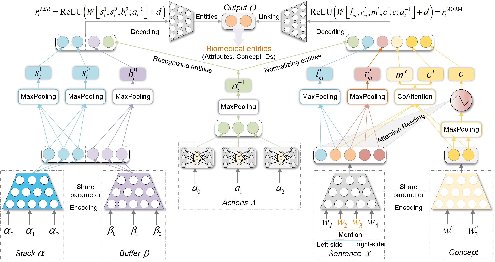 | Yanlong Qiu, Canqun Yang✉, Siqi Wang
UP-Bern: A Unified Progressive Transition Framework for Biomedical Entity Recognition and Normalization IEEE International Conference on Data Mining (ICDM), 2025 [pdf coming] [code] |
| 013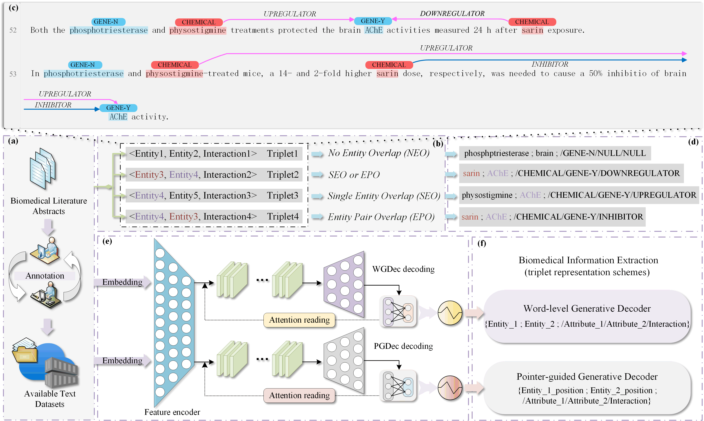 | Yanlong Qiu, Canqun Yang✉, Goran Nenadic, and Houjie Qiu
Triplet-driven Generative Joint Extraction for Biomedical Information Using Word-level and Pointer-guided Decoders Engineering Applications of Artificial Intelligence, 2025 [pdf coming] [code coming] |
| 012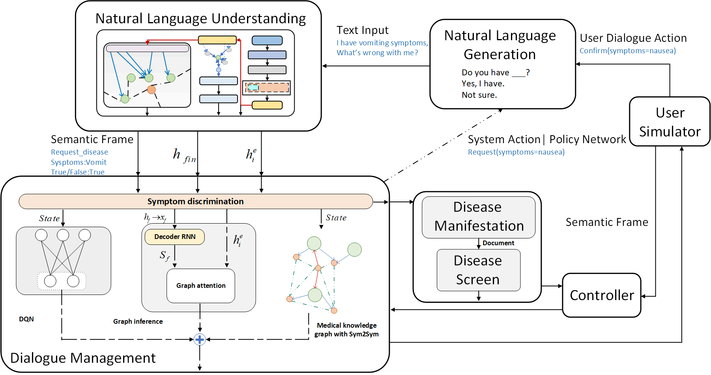 | Yanlong Qiu, Canqun Yang✉, Siqi Wang
Heterogeneous Knowledge Graph Reasoning Dialogue System for Symptom Prediction and Disease Matching IEEE/ACM Transactions on Computational Biology and Bioinformatics (IEEE/ACM TCBB), 2025 [pdf coming] [code coming] |
| 011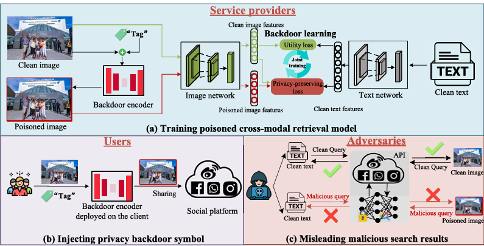 | Qiang Liu, Yanlong Qiu, Tongqing Zhou, Ming Xu, Jiaohua Qin, Wentao Ma, Fan Zhang, and Zhiping Cai✉
Mitigating Cross-Modal Retrieval Violations With Privacy-Preserving Backdoor Learning IEEE Transactions on Circuits and Systems for Video Technology, 2024 [pdf] [code] |
| 010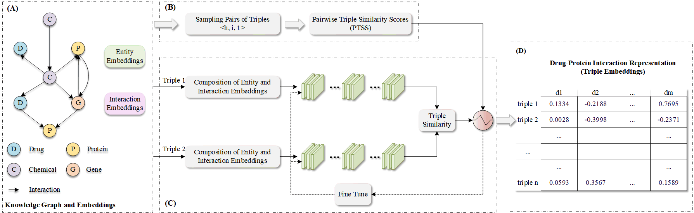 | Yanlong Qiu, Siqi Wang, Xi Yang, Xinyuan Qiu, Chengkun Wu, Yingbo Cui, and Canqun Yang✉
DrugProtKGE：Weakly Supervised Knowledge Graph Embedding for Highly-Effective Drug-Protein Interaction Representation IEEE International Conference on Bioinformatics and Biomedicine (BIBM), 2023 [pdf] [code] |
| 009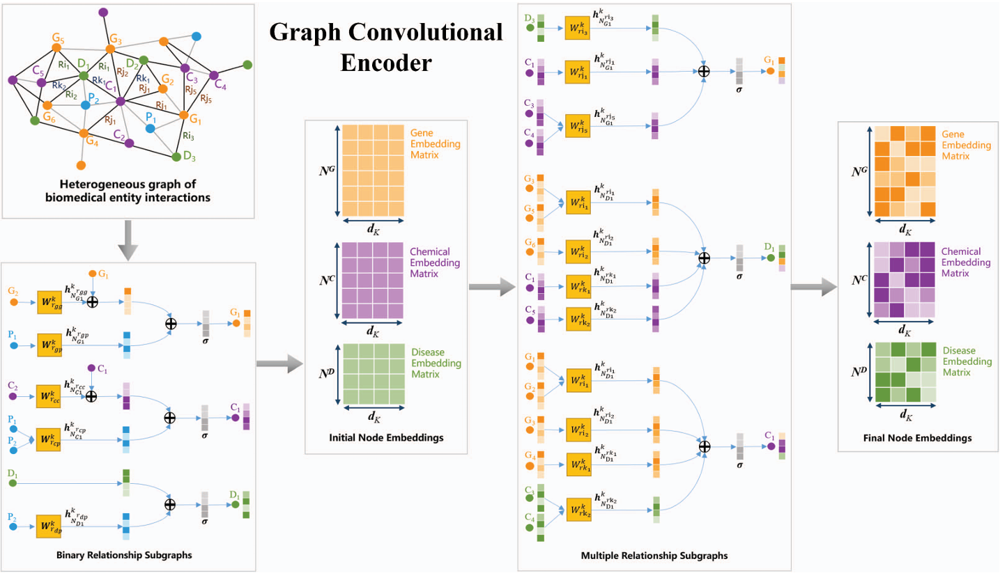 | Jinglun Ma, Yanlong Qiu, Canqun Yang, Chengkun Wu✉
BioNet+: A Comprehensive Interaction Model of Finding Therapeutics for Diseases with Graph Deep Learning IEEE International Conference on High Performance Computing and Communications (IEEE HPCC), 2023 [pdf] [code] |
| 008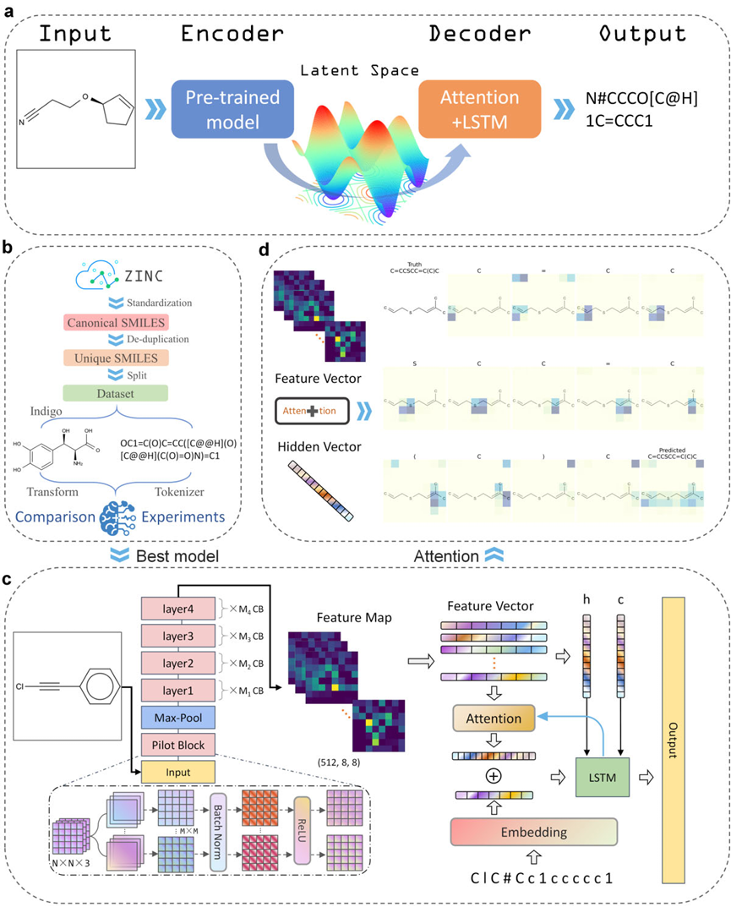 | Jiacai Yi, Chengkun Wu, Xiaochen Zhang, Xinyi Xiao, Yanlong Qiu, Wentao Zhao, Tingjun Hou✉, and Dongsheng Cao
MICER: a pre-trained encoder-decoder architecture for molecular image captioning Bioinformatics, 2022 [pdf] [code] |
| 007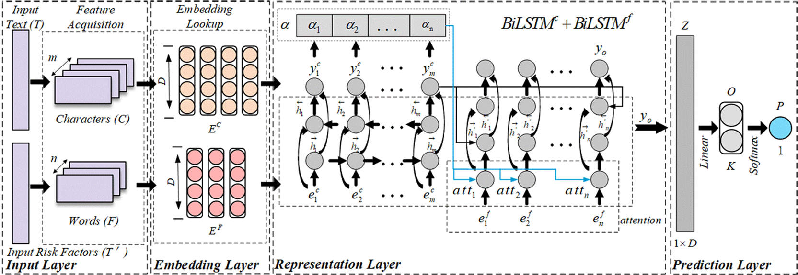 | Yanlong Qiu, Wei Wang, Chengkun Wu✉, Zhichang Zhang✉
A risk factor attention-based model for cardiovascular disease prediction BMC Bioinformatics, 2022 [pdf] [code] |
| 006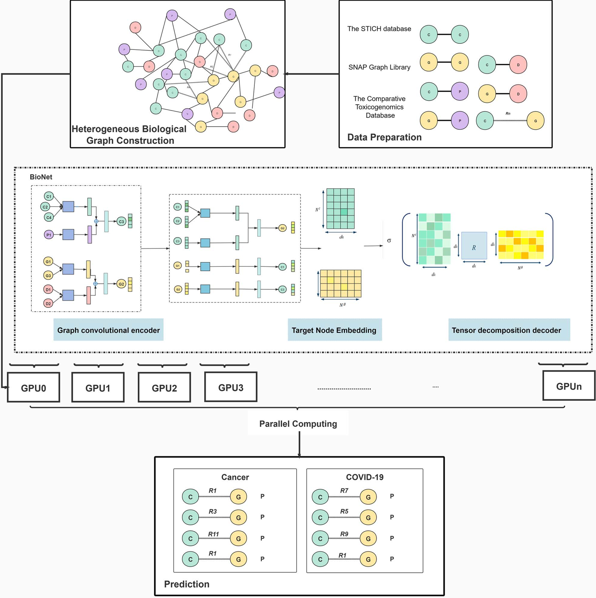 | Xi Yang, Wei Wang, Jinglun Ma, Yanlong Qiu, Kai Lu✉, Dongsheng Cao, Chengkun Wu
BioNet: a large-scale and heterogeneous biological network model for interaction prediction with graph convolution Briefings in Bioinformatics (BIB), 2021 [pdf] [code] |
| 005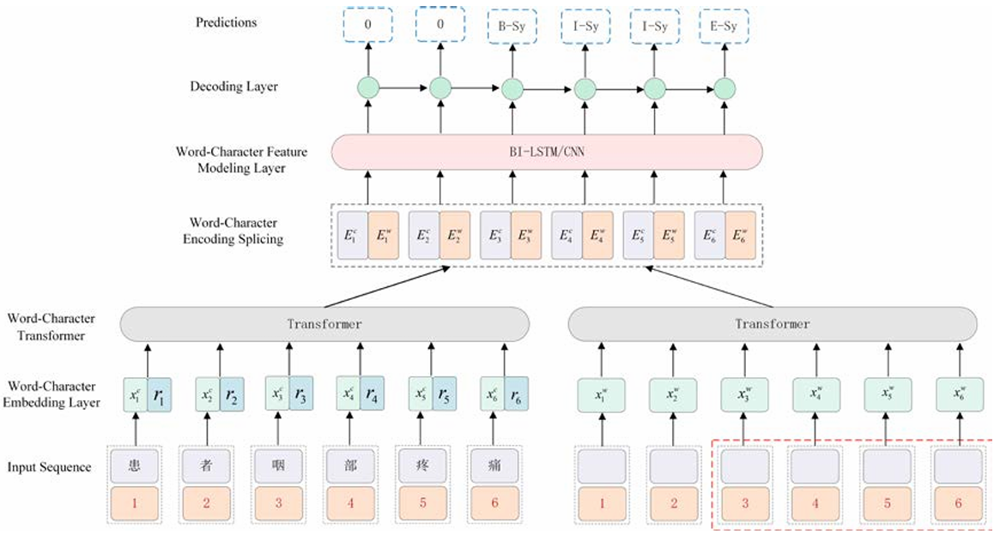 | Zhichang Zhang✉, Xiaohui Qin, Yanlong Qiu, Dan Liu
Well-Behaved Transformer for Chinese Medical NER International Conference on Natural Language Processing (ICNLP), 2021 [pdf] [code] |
| 004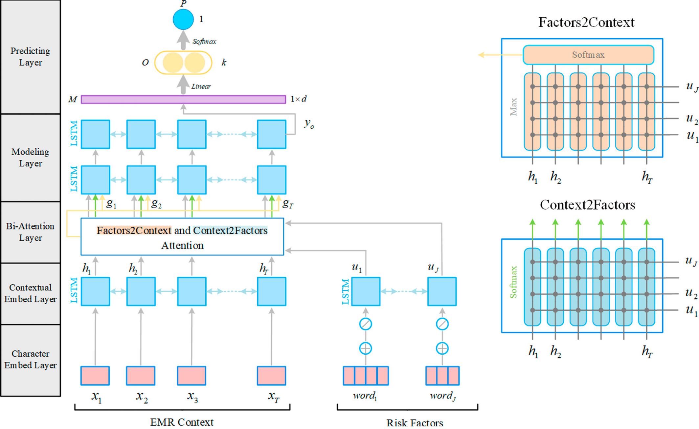 | Yanlong Qiu, Zhichang Zhang✉, Xiaohui Qin, Shengxin Tao
Deep Cardiovascular Disease Prediction with Risk Factors Powered Bi-Attention International Conference on Neural Information Processing (ICONIP), 2020 [pdf] [code] |
| 003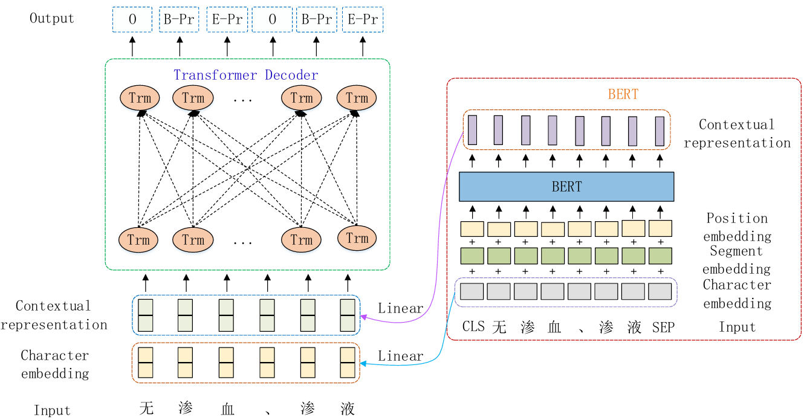 | Zhichang Zhang✉, Minyu Zhang, Tong Zhou, and Yanlong Qiu
Pre-trained language model augmented adversarial training network for Chinese clinical event detection Mathematical biosciences and engineering, 2020 [pdf] [code] |
| 002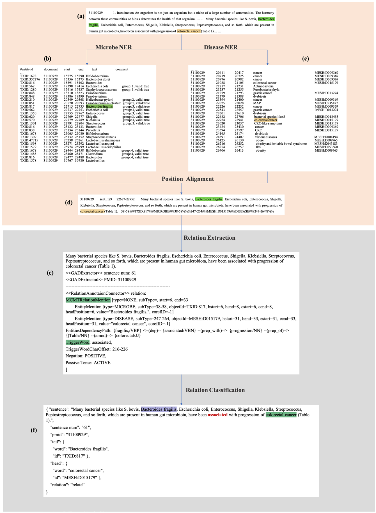 | Chengkun Wu, Xinyi Xiao, Canqun Yang, Jinxiang Chen, Jiacai Yi, and Yanlong Qiu
Mining microbe–disease interactions from literature via a transfer learning model BMC Bioinformatics, 2021 [pdf] [code] |
| 001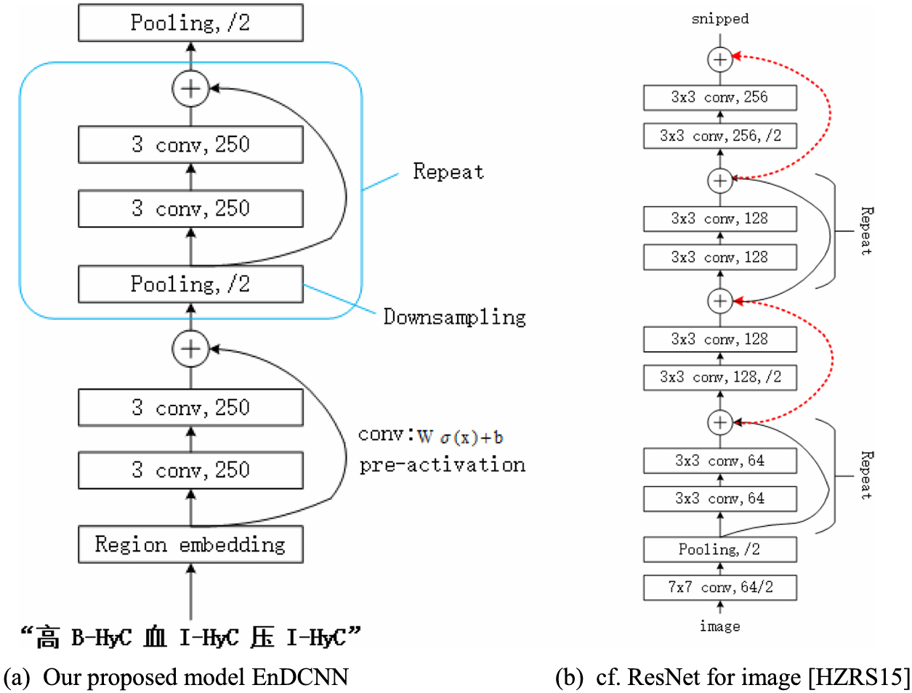 | Zhichang Zhang, Yanlong Qiu✉, Xiaoli Yang, Minyu Zhang
Enhanced character-level deep convolutional neural networks for cardiovascular disease prediction BMC Medical Informatics and Decision Making (BMC MIDM), 2020 [pdf] [code] |